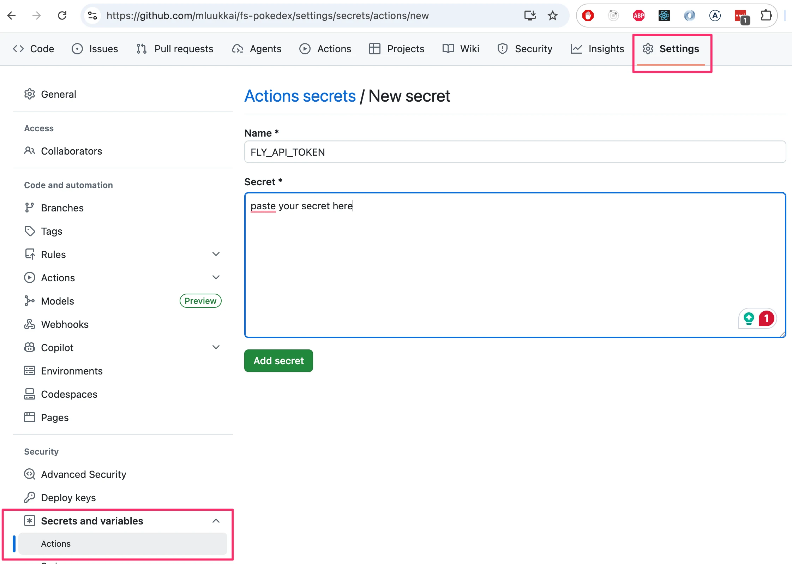
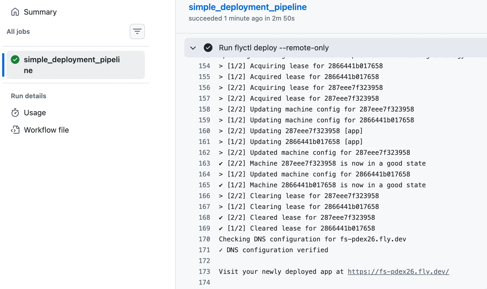
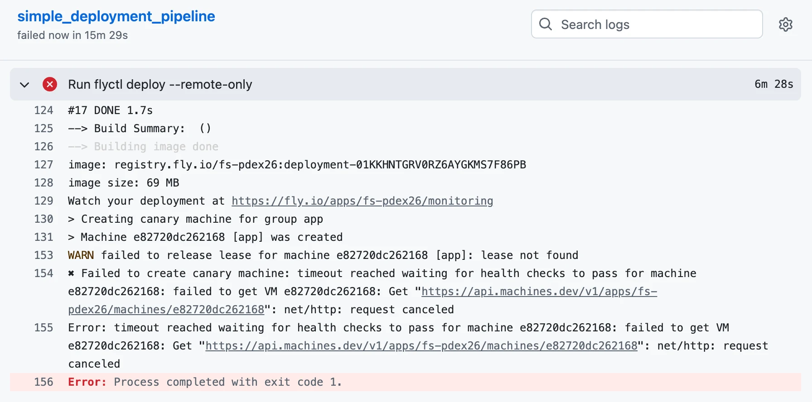
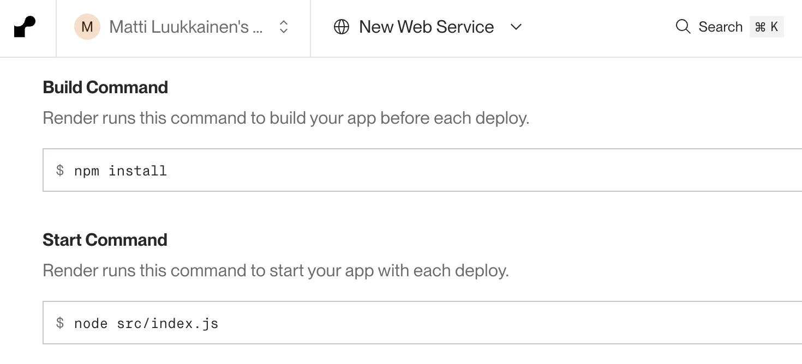
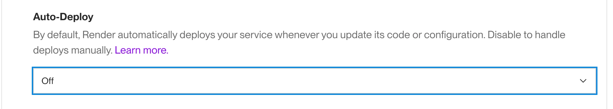
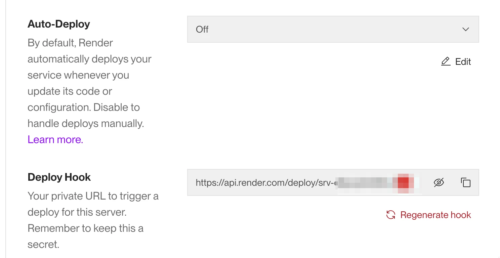
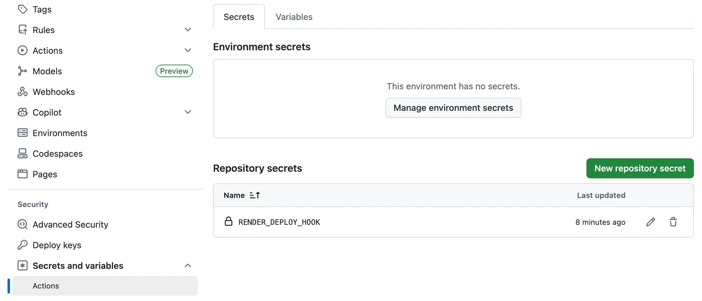
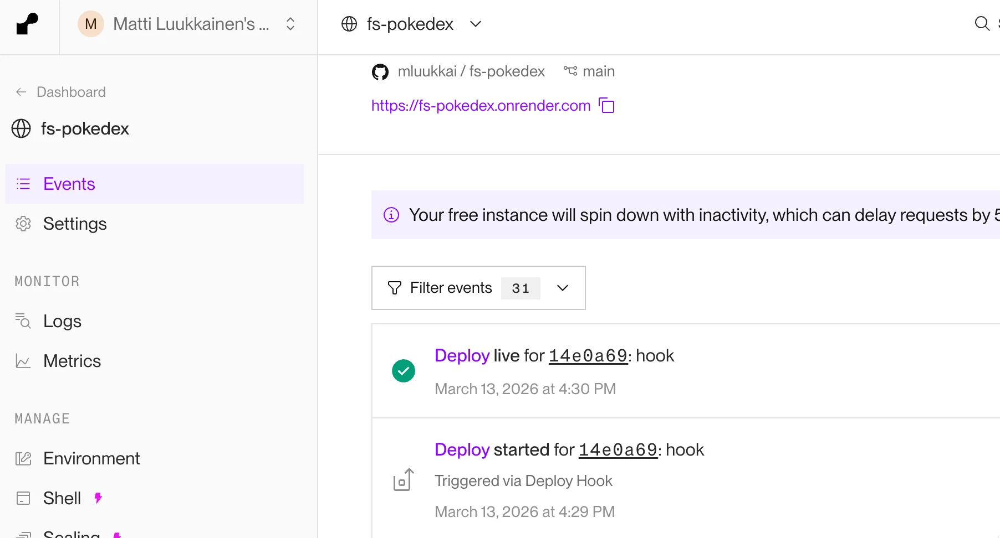

بعد أن كتبنا تطبيقاً جميلاً، حان الوقت للتفكير في كيفية نشره لاستخدام المستخدمين الحقيقيين.
في الجزء 3 من هذه الدورة، فعلنا ذلك بمجرد تشغيل أمر واحد من الطرفية لرفع الشيفرة وتشغيلها على خوادم مزوّد الخدمات السحابية Fly.io أو Render.
إن إصدار البرمجيات في Fly.io وRender بسيط جداً، على الأقل مقارنةً بالكثير من أنواع إعدادات الاستضافة الأخرى، لكنه لا يزال ينطوي على مخاطر: فلا شيء يمنعنا من نشر شيفرة معطوبة إلى بيئة الإنتاج عن غير قصد.
بعد ذلك، سنتناول مبادئ إجراء النشر بأمان وبعض مبادئ نشر البرمجيات على النطاقين الصغير والكبير.
كل ما يمكن أن يسوء...
نودّ أن نضع بعض القواعد حول كيفية عمل عملية النشر لدينا، لكن قبل ذلك علينا أن ننظر في بعض قيود الواقع.
تقول إحدى صيغ قانون مورفي: «كل ما يمكن أن يسوء سيسوء».
من المهم تذكّر ذلك عندما نخطط نظام النشر لدينا. ومن الأمور التي سنحتاج إلى أخذها في الحسبان:
- ماذا لو تعطّل حاسوبي أو تجمّد أثناء النشر؟
- أنا متصل بالخادم وأنشر عبر الإنترنت، ماذا يحدث إذا انقطع اتصالي بالإنترنت؟
- ماذا يحدث إذا فشل أي أمر معيّن في نص أو نظام النشر لدي؟
- ماذا يحدث إذا لم تعمل برمجيتي كما هو متوقع، لأي سبب كان، على الخادم الذي أنشر عليه؟ هل يمكنني التراجع إلى إصدار سابق؟
- ماذا يحدث إذا أرسل مستخدم طلب HTTP إلى برمجيتنا قبل النشر مباشرة (ولم يكن لدينا وقت لإرسال استجابة للمستخدم)؟
هذه مجرد مجموعة صغيرة مما يمكن أن يسوء أثناء النشر، أو بالأحرى أمور ينبغي أن نخطط لها. وبغض النظر عما يحدث، يجب أن لا يترك أبداً نظام النشر لدينا برمجيتنا في حالة معطوبة. كما ينبغي أن نعرف دائماً (أو نكون قادرين بسهولة على معرفة) الحالة التي وصل إليها النشر.
وثمة قاعدة مهمة أخرى ينبغي تذكّرها فيما يتعلق بالنشر (وبـCI بشكل عام): «الإخفاقات الصامتة سيئة للغاية!»
هذا لا يعني أنه يجب إظهار الإخفاقات لمستخدمي البرمجية، بل يعني أننا نحتاج إلى أن نكون على علم إذا ساء أي شيء. فإذا علمنا بمشكلة أمكننا إصلاحها. أما إذا لم يُظهر نظام النشر أي أخطاء لكنه فشل، فقد ننتهي إلى حالة نظن فيها أننا أصلحنا خطأً حرجاً، بينما فشل النشر، فبقي الخطأ في بيئة الإنتاج ونحن غير مدركين للحالة.
ماذا يفعل نظام النشر الجيد؟
من الصعب وضع قواعد أو متطلبات نهائية لنظام النشر، لكن لنحاول على أي حال:
- ينبغي أن يكون نظام النشر لدينا قادراً على الفشل بلطف عند أي خطوة من خطوات النشر.
- ينبغي أن لا يترك أبداً نظام النشر لدينا برمجيتنا في حالة معطوبة.
- ينبغي أن يُعلمنا نظام النشر عند حدوث فشل. فالإشعار بالفشل أهم من الإشعار بالنجاح.
- ينبغي أن يتيح لنا نظام النشر التراجع إلى نشر سابق.
- ينبغي أن يتعامل نظام النشر مع الحالة التي يرسل فيها مستخدم طلب HTTP قبل النشر مباشرة أو أثناءه.
- ينبغي أن يتأكد نظام النشر من أن البرمجية التي ننشرها تستوفي المتطلبات التي وضعناها لذلك (مثلاً، لا تنشر إذا لم تُشغَّل الاختبارات).
لنحدد أيضاً بعض الأمور التي نريدها في نظام النشر الافتراضي هذا:
- نودّ أن يكون سريعاً.
- نودّ ألا يكون هناك توقف خلال النشر (وهذا مختلف عن المتطلب الخاص بالتعامل مع طلبات المستخدمين قبل النشر مباشرة أو أثناءه).
بعد ذلك سيكون لدينا مجموعتان من التمارين لأتمتة النشر باستخدام GitHub Actions، واحدة لـFly.io وأخرى لـRender. عملية النشر خاصة دائماً بمزوّد الخدمات السحابية المعيّن، لذا يمكنك أيضاً إنجاز مجموعتي التمارين إذا أردت رؤية الفروق في كيفية تعامل هاتين الخدمتين مع النشر.
هل تم نشر التطبيق؟
بما أننا لا نجري أي تغييرات حقيقية على التطبيق، فقد يكون من الصعب بعض الشيء رؤية ما إذا كان نشر التطبيق يعمل فعلاً. لننشئ نقطة نهاية وهمية في التطبيق تتيح إجراء بعض تغييرات الشيفرة والتأكد من أن الإصدار المنشور قد تغيّر بالفعل:
app.get('/version', (req, res) => {
res.send('1') // غيّر هذا النص لضمان نشر إصدار جديد
})
لاحظ أن نقطة النهاية هذه تعمل فقط في بناء الإنتاج؛ فإذا شغّلت التطبيق باستخدام npm start فلن يُستخدم تطبيق Express إطلاقاً، وبالتالي فإن نقطة النهاية غير موجودة!
التمارين 10.-12. (Fly.io)
إذا كنت تفضّل استخدام خيارات استضافة أخرى، فهناك مجموعة تمارين بديلة لـ Render.
10. نشر تطبيقك على Fly.io
أعدّ تطبيقك في خدمة الاستضافة Fly.io كما فعلنا في الجزء 3.
وعلى خلاف الجزء 3، فإننا في هذا الجزء لا ننشر الشيفرة إلى Fly.io بأنفسنا (باستخدام الأمر flyctl deploy)، بل ندع سير عمل GitHub Actions يفعل ذلك نيابةً عنا.
قبل الانتقال إلى النشر الآلي، سنتأكد في هذا التمرين من إمكانية نشر التطبيق يدوياً.
إذن، أنشئ تطبيقاً جديداً في Fly.io. بعد ذلك، أنشئ رمز وصول لـFly.io API باستخدام الأمر
fly tokens create deploy
ستحتاج إلى الرمز قريباً في سير عمل النشر لديك، لذا احفظه في مكان ما (لكن لا تُدرجه في commit على GitHub)!
وكما قلنا، قبل إعداد خط أنابيب النشر في التمرين التالي، سنتأكد الآن من أن النشر اليدوي باستخدام الأمر flyctl deploy يعمل.
هناك بضعة تغييرات مطلوبة.
ينبغي تعديل ملف الإعدادات fly.toml ليتضمن ما يلي:
app = 'fs-pdex'
primary_region = 'arn'
[build]
// BEGIN HIGHLIGHT
[env]
PORT="5001"
[processes]
app = "node app.js"
// END HIGHLIGHT
[http_service]
// BEGIN HIGHLIGHT
internal_port = 5001 # تأكد من أن هذا مطابق لما ورد أعلاه!
// END HIGHLIGHT
force_https = true
auto_stop_machines = 'stop'
auto_start_machines = true
min_machines_running = 0
processes = ['app']
[[vm]]
memory = '1gb'
cpus = 1
memory_mb = 1024
في processes نحدد الأمر الذي يبدأ التطبيق. فبدون هذا التغيير، يبدأ Fly.io خادم تطوير React فقط، ما يؤدي إلى توقفه لأن التطبيق نفسه لا يبدأ. سنضبط أيضاً قيمة PORT لتُمرَّر إلى التطبيق كمتغير بيئة.
ينبغي الآن أن يعمل النشر إذا كان بناء الإنتاج موجوداً على الجهاز المحلي، أي إذا نُفِّذ الأمر npm build.
قبل الانتقال إلى التمرين التالي، تأكد من أن النشر اليدوي باستخدام الأمر flyctl deploy يعمل!
11. النشر الآلي إلى Fly.io
وسّع سير العمل بخطوة لنشر تطبيقك إلى Fly.io باتباع النصيحة الواردة هنا. تحقق من أحدث إصدار لإجراء setup-flyctl من هنا.
لاحظ أنه ينبغي أن يُنشئ GitHub Action بناء الإنتاج (باستخدام npm run build) قبل خطوة النشر!
ستحتاج إلى رمز التفويض الذي أنشأته للتو من أجل النشر. والطريقة الصحيحة لتمرير قيمته إلى GitHub Actions هي استخدام أسرار المستودع (Repository secrets):

الآن يمكن لسير العمل الوصول إلى قيمة الرمز كما يلي:
${{secrets.FLY_API_TOKEN}}
إذا سار كل شيء على ما يرام، ينبغي أن تبدو سجلات سير العمل لديك هكذا:

تذكّر أنه من الضروري دائماً مراقبة ما يحدث في سجلات الخادم عند التجربة مع عمليات نشر الإنتاج، لذا استخدم flyctl logs مبكراً وبشكل متكرر. لا، استخدمه طوال الوقت!
12. فحص الحالة في Fly.io
لنفترض أننا كسرنا التطبيق عن غير قصد بتشغيله على منفذ خاطئ:
const start = async () => {
const start = async () => {<br> await app.listen(PORT+1) // HIGHLIGHT LINE<br> console.log(`server started on port ${PORT}`)<br>}
لا تلاحظ اختباراتنا هذا التغيير الكاسر (لأن اختبارات e2e تُشغَّل في وضع التطوير)، وسيُنشَر التطبيق في حالة غير فعّالة. فكيف يمكننا منع ذلك؟
لحسن الحظ، لدى Fly.io عدة خيارات إعداد تضمن ألا يُنشر إصدار جديد من التطبيق إلى المستخدمين إلا إذا كان في حالة سليمة.
إحدى طرق منع عمليات النشر المعطوبة هي استخدام فحص على مستوى HTTP معرّف في قسم http_service.http_checks من ملف الإعدادات fly.toml. يمكن استخدام هذا النوع من الفحص للتأكد من أن التطبيق في حالة فعّالة.
أضف نقطة نهاية بسيطة لإجراء فحص حالة التطبيق إلى الواجهة الخلفية. يمكنك مثلاً نسخ هذه الشيفرة:
app.get('/health', (req, res) => {
res.send('ok')
})
اضبط فحص HTTP للتأكد من سلامة النشر بإرسال طلب HTTP إلى نقطة نهاية فحص الحالة المعرّفة.
تحتاج أيضاً إلى ضبط استراتيجية النشر (في ملف fly.toml) للتطبيق لتكون canary. تضمن هذه الاستراتيجية ألا يُنشر إلا تطبيق في حالة سليمة.
تأكد من أن GitHub Actions يلاحظ إذا كسر أحد عمليات النشر تطبيقك:

يمكنك محاكاة ذلك مثلاً كما يلي:
app.get('/health', (req, res) => {
// BEGIN HIGHLIGHT
// eslint-disable-next-line no-constant-condition
if (true) throw('error... ')
// END HIGHLIGHT
res.send('ok')
})
التمارين 10.-12. (Render)
إذا كنت تفضّل استخدام خيارات استضافة أخرى، فهناك مجموعة تمارين بديلة لـFly.io.
10. نشر تطبيقك على Render
أعدّ تطبيقك في Render. لم يعد الإعداد الآن بالبساطة نفسها التي كان عليها في الجزء 3. عليك أن تفكر بعناية فيما ينبغي وضعه في هذه الإعدادات:

إذا احتجت إلى تشغيل عدة أوامر في أمر البناء أو التشغيل، فيمكنك استخدام نص صدفة (shell script) بسيط لذلك.
أنشئ مثلاً ملفاً باسم build_step.sh بالمحتوى التالي:
<strong>#!/bin/bash</strong>
echo "Build script"
# أضف الأوامر هنا
امنحه أذونات التنفيذ (ابحث في Google أو انظر مثلاً هذا لمعرفة كيفية ذلك) وتأكد من قدرتك على تشغيله من سطر الأوامر:
$ ./build_step.sh
Build script
وهناك خيار آخر هو استخدام أمر ما قبل النشر (Pre deploy command)، والذي يتيح لك تشغيل أمر إضافي واحد قبل بدء النشر.
تحتاج أيضاً إلى فتح الإعدادات المتقدمة (Advanced settings) وإيقاف النشر التلقائي لأننا نريد التحكم في النشر من داخل GitHub Actions:

تأكد الآن من أن التطبيق يعمل. استخدم النشر اليدوي (Manual deploy).
على الأرجح ستفشل الأمور في البداية، لذا تذكّر أن تُبقي السجلات (Logs) مفتوحة طوال الوقت.
11. النشر الآلي إلى Render
الخطوة التالية هي أتمتة النشر.
توجد بعض الإجراءات الجاهزة من أطراف ثالثة لنشر Render، لكن الخيار الأكثر موثوقية هو استخدام خطاف النشر في Render (Render Deploy Hook)، وهو رابط خاص لتشغيل النشر. يمكنك الحصول عليه من إعدادات تطبيقك:

لا تستخدم الرابط المجرد في خط أنابيبك. بدلاً من ذلك، أنشئ سراً (secret) في GitHub من أجله:

ثم يمكنك استخدامه هكذا:
- name: Trigger deployment
run: curl ${{ secrets.RENDER_DEPLOY_HOOK }}
يستغرق النشر بعض الوقت. انظر إلى تبويب الأحداث (events) في لوحة تحكم Render لمعرفة متى يصبح النشر الجديد جاهزاً:

12. فحص الحالة في Render
تنجح جميع الاختبارات ويُنشر الإصدار الجديد من التطبيق تلقائياً إلى Render، فيبدو أن كل شيء على ما يرام. لكن هل يعمل التطبيق فعلاً؟ إلى جانب الفحوصات التي تُجرى في خط أنابيب النشر، من المفيد جداً أن تكون لدينا أيضاً بعض فحوصات الحالة «على مستوى التطبيق» التي تضمن أن التطبيق فعلاً في حالة فعّالة.
ينبغي أن تضمن عمليات النشر دون توقف في Render بقاء تطبيقك فعّالاً طوال الوقت!
أضف نقطة نهاية بسيطة لإجراء فحص حالة التطبيق إلى الواجهة الخلفية. يمكنك مثلاً نسخ هذه الشيفرة:
app.get('/health', (req, res) => {
res.send('ok')
})
أدرج الشيفرة في commit وادفعها إلى GitHub. تأكد من قدرتك على الوصول إلى نقطة نهاية فحص الحالة في تطبيقك.
اضبط الآن مسار فحص الحالة (Health Check Path) لتطبيقك. يتم الإعداد في تبويب الإعدادات في لوحة تحكم Render.
أجرِ تغييراً في شيفرتك، وادفعها إلى GitHub، وتأكد من نجاح النشر.
لاحظ أنك تستطيع رؤية سجل النشر بالنقر على أحدث عملية نشر في تبويب الأحداث.
عندما تنتهي من إعداد فحص الحالة، حاكِ عملية نشر معطوبة بتغيير الشيفرة كما يلي:
app.get('/health', (req, res) => {
// BEGIN HIGHLIGHT
// eslint-disable-next-line no-constant-condition
if (true) throw('error... ')
// END HIGHLIGHT
res.send('ok')
})
ادفع الشيفرة إلى GitHub وتأكد من عدم نشر إصدار معطوب ومن استمرار تشغيل الإصدار السابق من التطبيق.
قبل المتابعة، أصلح عملية النشر لديك وتأكد من أن التطبيق يعمل مرة أخرى كما هو مقصود.
قد تكون فكرة جيدة تغيير سياسة النشر في Render إلى override، كما هو موضح هنا. وإلا فسيتعين على النشر الجديد الانتظار حتى 15 دقيقة ريثما يلغي Render عملية النشر الحالية المعطوبة.
10. نشر تطبيقك على مزوّد الخدمات السحابية
11. النشر السحابي الآلي
12. فحص الحالة